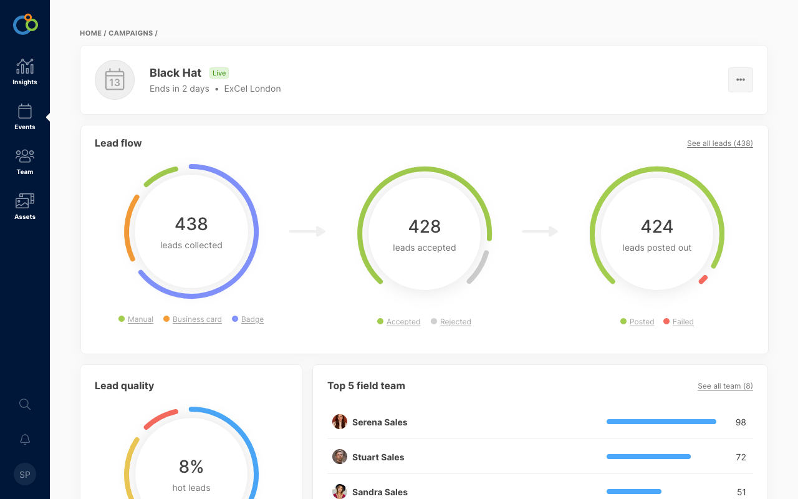

Before and after


1
2
3
1Made it easier to track progress by keeping the progress bar always visible; before, during, and after you've finished a course.
2Made it easier to parse information by removing clutter and being considerate about visual hierarchy.
3Removed the need for a separate overview page by making it a different state of the learning UI.